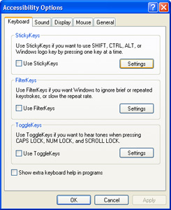
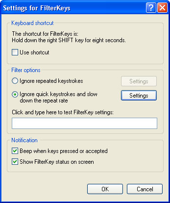
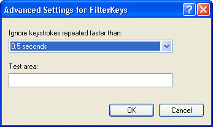
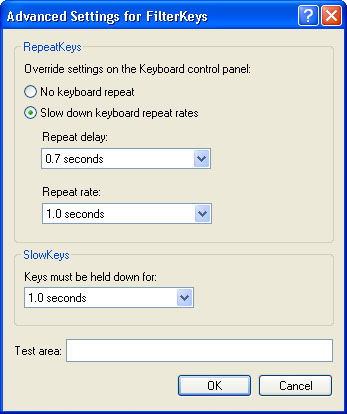

Free
computer Tutorials
|
Free
computer Tutorials
|
|
 home home |
Stay at Home and Learn | ||||
|
Accessibility Options - Windows XP FilterKeysThis tutorial assumes that you have set the Control panel to Classic View. To see how to do this, click this link (opens in a new window): Set the Control Panel to Classic View
If you or a member of the family have difficulties using the keyboard (trembling hands that produce multiple keystrokes, or difficulty pressing and releasing the keys quickly enough), then Windows XP has an option called FilterKeys. This is on the Accessibility Options dialogue box. To see it, click the Start button in the bottom left of your screen. From the Start menu, click on Control Panel. Double click the Accessibility Options icon to see the following screen.  With FilterKeys, you can control how long the keyboard takes to respond before the next key press is ready (under normal circumstances this is immediately), and tell XP to ignore repeated keystrokes.
To see what you can do with FilterKeys, click the Settings button.
You'll see the following dialogue box:  The shortcut for FilterKeys is to hold down the RIGHT Shift key for 8 seconds. When you do, it switches FilterKeys on or off. Put a tick in the box Use shortcut if this will be useful to you (a non disabled person sharing a disabled person's PC, for example). The second set of options are:
If you select the first option (Ignore repeated keystrokes) you can set how long it takes before the next key is ready to be pressed. To try it out, click the settings button to see this dialogue box:  Click inside the Test area and try to press a letter on your keyboard twice in under half a second. You won't be able to. If that's not slow enough, click the drop down list to select a new value. You can choose from between 0.5 seconds and 2 seconds. The second option, Ignore quick keystrokes and slow down the repeat rate, allows you to set the repeat delay and repeat rate. Click the Settings button to see the following options:  Repeat delay is how long it takes for a key to respond to a single key press. The value go from 0.3 seconds to 2 seconds. The repeat rate is how fast the letters appear if you hold down the key. Or, to put it another way, you have up to 2 seconds to take your finger off the key before it will repeat the letter. But you can choose values from 0.3 seconds to 2 seconds. The Slow Keys option lets you slow down the keys on the keyboard, so that a key needs to be held down for a certain length of time before anything happens. The intervals go from 0 to 20 seconds.
The FilterKeys icon is the one on the far left - the one that looks like a stopwatch.
Switch Off FilterKeysA lot of people have accidentally switched FilterKeys on. Symptoms are a keyboard that keeps beeping whenever you press a letter, and/or a delay before you can press a new key. To turn off this feature, uncheck the box on the Accessibility Options dialogue box that says Use FilterKeys. Next, click the Settings button and uncheck the option for Use Shortcut. Click OK on all the dialogue boxes and your problems should now disappear! If the problem doesn't disappear, try the following:
Or just try holding down both Shift keys at the same time.
<--Back One Page Move on to the Next Part--> |
|||||
|